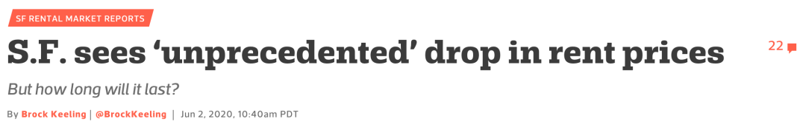
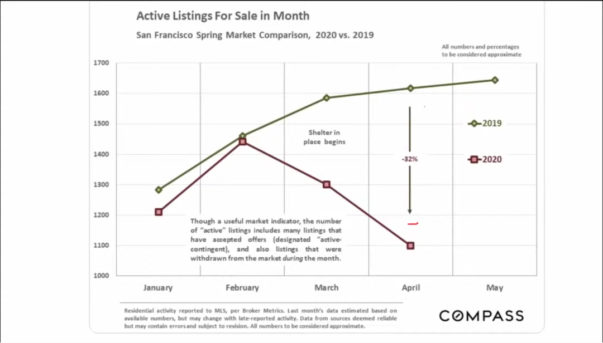
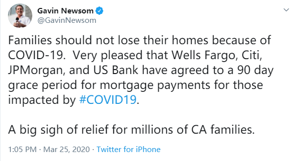
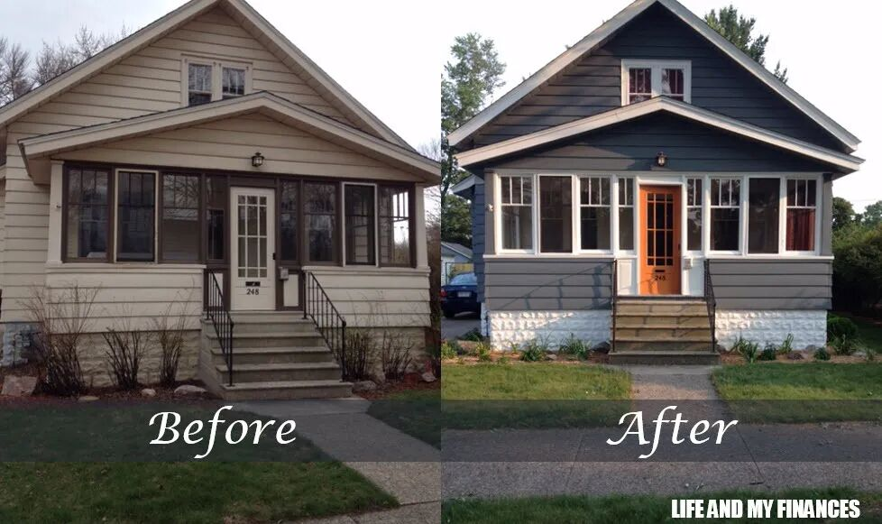

--------点击蓝字关注我--------
微信号：gaoxiaomao88
--------点击蓝字关注我--------
微信号：gaoxiaomao88
最近跳槽的事情终于彻底结束了，我也终于可以好好放松一下。因为工作地点换了，所以我也打算搬家到离城里远一点的地方，这样居住环境也可以好一点。
除了筹办搬家以及离职入职手续，我最近还在关注湾区的房市，为第一套自住房的购入做准备。这个基本上就是我接下来一年的一个小目标了，就是通过第一套自住房的购入，初步了解房地产投资的方方面面，进而为未来的房产投资打下一定的基础。
由于疫情的原因，湾区的房租整体上有一个比较大幅度的下降。目前来看房价暂时还没有下跌，反而稍稍上涨了一点。

尽管湾区的房价上涨了，但是我个人比较相信贝版在他的Youtube视频里讲到的观点(见https://www.youtube.com/watch?v=zc68TUyoxJc)，房价逆势上涨仅仅是因为由于疫情，市场上的房子供给变少了，而需求不变导致的短暂上涨。

而房价下跌将会在不久的将来发生。由于现在银行对于很多人的房屋贷款都有宽限6个月-12个月的政策，很多房子并不会马上碰到还不了房贷而被迫出售的问题，然而等到这个宽限期一到, 一定会有很多还不起房贷的人会被迫出售房子，到时候房价会有一波比较大的回调。由于美国放贷宽限的政策是今年3/18 开始的，那么如果说宽限6个月的话，房贷的大规模违约会在今年9-11月份发生，如果说宽限可以长达12个月的话，大规模的违约会在明年的3-5月份发生。

虽说购入的时机还没有到，但是要是真的等到时机来了，再从头开始学起，就有点来不及了。目前我个人的计划是从现在开始慢慢了解房地产的情况，甚至如果有机会的话，可以参与一些真实的项目，积累一些经验，为到时候的购房做准备。
那么怎么学习呢？那当然是找在这个领域的牛人学习了。我通过贝版的视频，偶然中找到了一个叫“北美地产学堂”的教育机构。他们为在美国的房产投资者开设了一系列的房产投资课程。我个人感觉做得非常专业，请来的老师也都非常厉害。
目前我在上的Flipping课程昨天刚上完了第一节课。所谓的Flipping其实就是旧房翻新，也就是把一套老的房子买回来，然后做重新的整修，然后再卖出去获利的生意。对我个人来说，由于我的目标是自住房，因此并不需要卖出这一步。但是课上别的部分的内容还是有很多有价值的地方。

举个例子来说，在Redfin上面有那么多的房子，到底什么房子算是划算的，好的deal，而什么样的房子算是要价过高呢？其实我心里是没有数的。我有的时候会碰到两个看上去非常类似的房子，价格却差了很多，让我感到非常疑惑。
在这门Flipping的课程中，老师会告诉我们如何去估计一个房子的翻新后在市场上多少钱可以卖出去，这样子再减去翻新过程的装修，交易费用，就可以估计出一个旧房子的合理买入价格。如果我可以熟练掌握这个流程，我将来买房子的时候心里会更加有底。
不仅如此，课程上还会教我们如何找到相对好的deal来购入房子。在Redfin，Zillow，MLS上面的大部分的售房信息由于是公开信息，所以只要稍微好一点的deal马上就被人抢了，很难拿到便宜的价格。课程上老师会教我们如何通过一些非公开的渠道来得到一些售房的信息，挖掘潜在的好deal。
除了这个Flipping的课程，我还准备上他们的入门课以及找Deal课，等这些课程上完了可能还会考虑继续上别的课程。等我上了更多课程以后我会在文章里再分享的。
今天就写到这儿~~

扫码关注我~